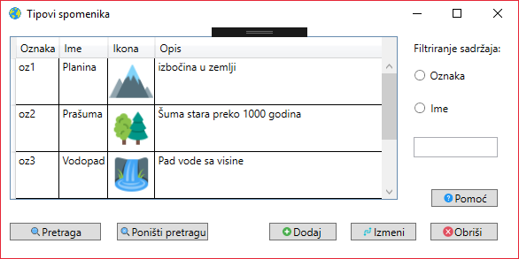

Uvod i osnovne informacije aplikaciji
Tipovi spomenika
Etikete
Spomenici
Mapa
Tipovi spomenika su opisani preko svoje jedinstvene ljudski čitljive oznake koju unosi korisnik, preko svog imena, opisa i ikonice. Prilikom dodavanja novog tipa obavezno je uneti oznaku i ime, dok su opis i ikonica opcioni. Oznaka i ime ne mogu imati manje od 3 slova i moraju biti jedinstveni odnosno ne mogu postojati 2 tipa sa istim imenom ili oznakom. Ikonica mora postojati za svaki tip, ali ako je ne unesete biće izabrana podrazumevana. Ikonica tipa biće dodata i svim spomenicima tog tipa ukoliko za njih ne odaberete posebne ikonice.
Prikaz tipova 
Pritiskom na dugme u meniju Tipovi spomenika pojavljuje se prozor u kome su prikazani svi tipovi spomenika i iz tog prozora moguća je manipulacija tipovima odnosno: